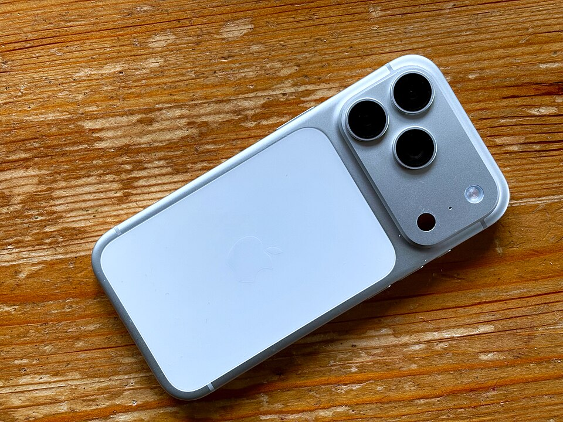
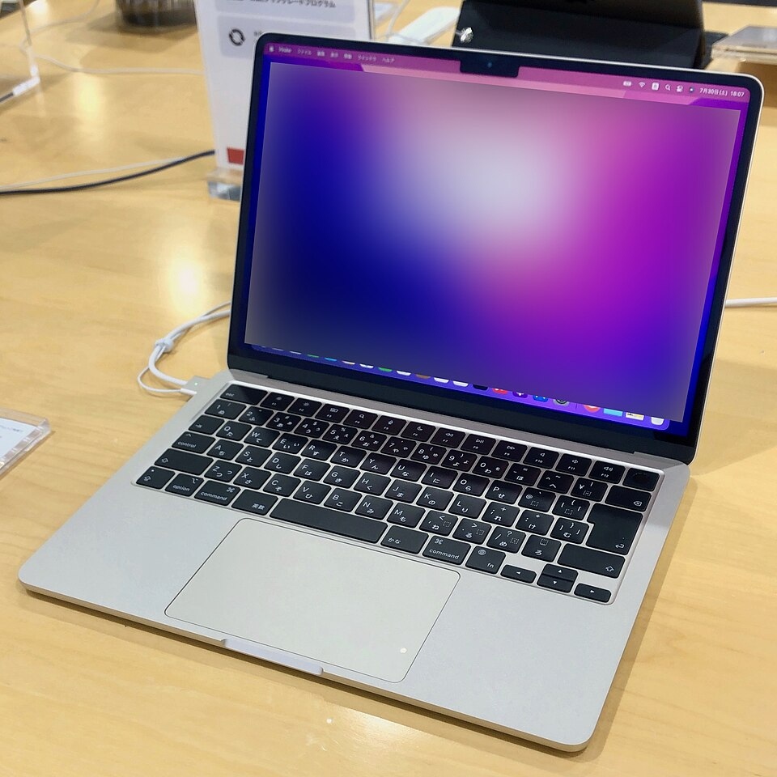
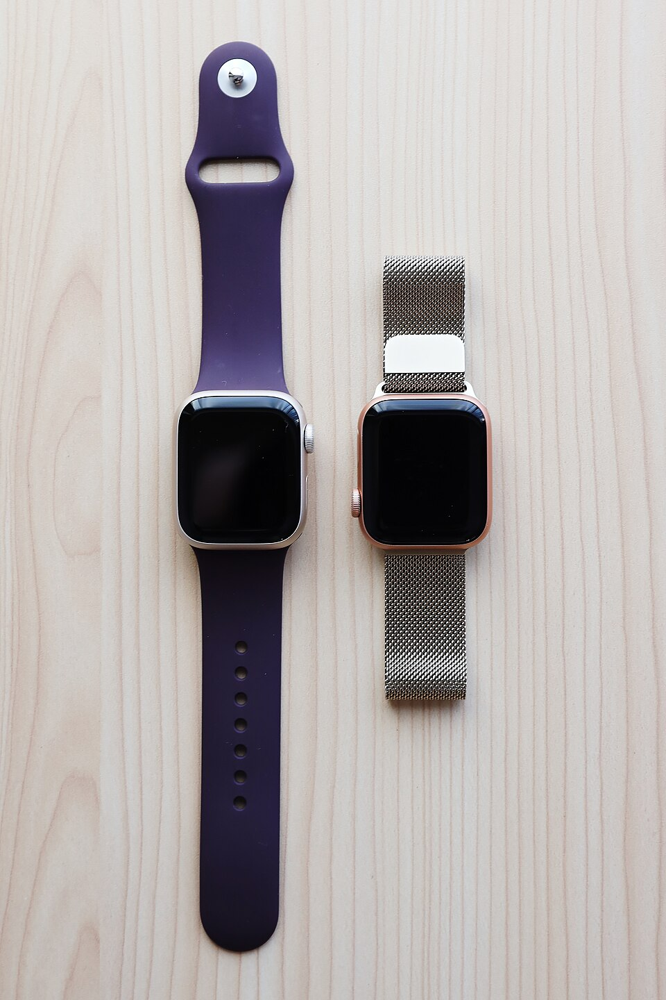

이 기업은? 아이폰을 만드는 회사로 가장 잘 알려져 있어요. 맥 컴퓨터, 아이패드, 애플워치, 에어팟 같은 기기를 직접 설계하고, 그 기기에서 쓰는 앱스토어·음악·클라우드 같은 서비스로도 돈을 벌어요. 기기와 서비스가 서로 잘 맞물리도록 만들어, 한 번 쓰기 시작한 사람이 계속 애플 제품을 쓰게 만드는 것이 강점이에요.
핵심 정보 대표
존 터너스 CEO (2026년 9월~) · 팀 쿡 이사회 의장
직원 수
약 16만 7천 명 (전 세계, 2026년 9월)
무엇을 하는 기업인가요? 칸에 마우스를 올리거나 누르면 자세한 설명을 볼 수 있어요.
아이폰 애플의 대표 제품, 전체 매출의 절반 이상 자세히 보기 
사진: Olgierd Rudak · CC0 · 위키미디어 커먼즈 아이폰 애플 매출의 절반 이상을 차지하는 대표 제품이에요. 매년 가을 새 모델을 내놓고, 칩부터 운영체제(iOS)까지 직접 만들어요.
대표 예 아이폰 17 시리즈 등
서비스 앱스토어, 아이클라우드, 애플뮤직, 애플페이 등 자세히 보기 서비스 아이폰 등 애플 기기 사용자에게 파는 서비스예요. 앱스토어 수수료, 아이클라우드 저장공간, 애플뮤직·애플TV+ 구독, 애플페이 등이 있고 이익이 많이 남아요.
대표 예 앱스토어, 아이클라우드, 애플뮤직, 애플페이
맥·아이패드 노트북·데스크톱 컴퓨터와 태블릿 자세히 보기 
사진: KKPCW（Kyu3） · CC BY-SA 4.0 · 위키미디어 커먼즈 맥·아이패드 직접 설계한 칩(M 시리즈)을 넣은 노트북·데스크톱 컴퓨터 맥과 태블릿 아이패드예요.
대표 예 맥북 에어·프로, 아이맥, 아이패드
웨어러블·홈 애플워치, 에어팟, 애플TV 등 자세히 보기 
사진: MIKI Yoshihito · CC BY 2.0 · 위키미디어 커먼즈 웨어러블·홈 손목에 차는 애플워치, 무선 이어폰 에어팟, 셋톱박스 애플TV 등이에요.
대표 예 애플워치, 에어팟, 애플TV
숫자로 보기 원화 금액은 1달러 = 1,334.9원(2026년 11월 27일 유럽중앙은행 기준환율)으로 환산한 대략적인 값이에요.
어디서 돈을 버나요? 아이폰 53.1%
서비스 25.8%
맥 7.9%
웨어러블·홈·액세서리 7.4%
아이패드 5.8%
2026 회계연도(2025년 10월~2026년 9월) 제품·서비스별 매출 기준이에요. 아이폰이 절반을 넘고, 서비스가 두 번째로 큰 수입원이에요.
실적 흐름 회계연도별 (최근 5년) 분기별 (최근 8분기)
달러 원화로 보기
애플의 회계연도는 매년 9월 말에 끝나요. 예를 들어 2026 회계연도는 2025년 10월~2026년 9월이에요.
걸어온 길 1976 스티브 잡스, 스티브 워즈니악 등이 설립
1984 매킨토시 컴퓨터 출시
1997 스티브 잡스 복귀
2001 음악 플레이어 아이팟 출시
2007 첫 아이폰 공개
2008 앱스토어 시작
2010 아이패드 출시
2011 팀 쿡이 CEO 취임
2020 직접 설계한 M1 칩을 맥에 탑재
2026 존 터너스가 CEO 취임, 팀 쿡은 이사회 의장으로
경쟁사 사업마다 겨루는 상대가 달라요
앱·서비스 플랫폼 구글(알파벳) 미국 스포티파이 스웨덴
출처: 실적 SEC EDGAR 자동 수집, 애플 분기·연간 실적 발표 및 10-Q·10-K 공시(회계연도 2022~2026), 2026년 CEO 교체 발표 · 환율 1달러 = 1,334.9원(2026년 11월 27일 유럽중앙은행 기준환율) · 마지막 업데이트: 2026년 11월 28일